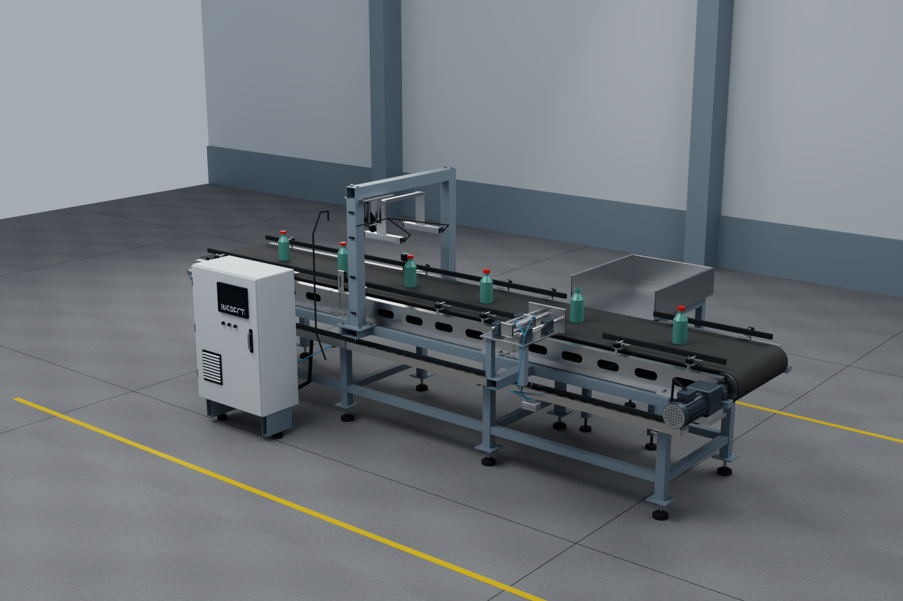

Cap inspection
A bottle-handling configuration with threaded necks, fitted caps and an illustrative missing-cap example.

Overview / Native NVIDIA RTX renderFull-size image
What you are looking at
Original CAD-based concept geometry: fabricated conveyor sideframes, belt return and drive, adjustable guides, camera and light mounts, an operator cabinet and a side-reject mechanism.
Rendered views or interactive geometry
These images were rendered with NVIDIA RTX. Select Explore 3D to orbit, pan, zoom and identify components in the browser model. Both views use the same original CAD assembly; the browser uses optimized meshes.